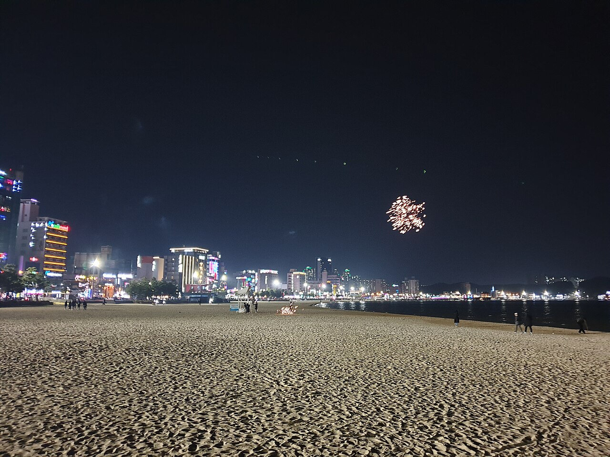

경북 동해안
포항국제불빛축제 21일(토) 밤 영일대 앞바다 국제불꽃쇼 — 한국·프랑스·일본 3개국, 해오름대교 저녁 7~9시 통제
2026 포항국제불빛축제가 19일부터 21일(토)까지 영일대해수욕장과 송도 포항구항 일원에서 열린다. 마지막 날인 21일 영일대 앞바다에서 한국·프랑스·일본 팀의 국제불꽃쇼가 펼쳐진다(노컷뉴스). 경북매일은 불꽃쇼가 오후 8시부터라고 전했다. 주제는 '윤슬, 빛이 만나 우리가 되다'다(아주경제).
관람석 입장 팔찌는 행사 당일 오전 10시부터 종합안내소에서 나눠 주고, 포항시는 대중교통과 임시주차장 이용을 권했다(아주경제). 21일 오후 7~9시에는 해오름대교가 전면 통제되고, 영일대 시계탑~라한호텔 교차로 차량 통제는 21일 밤 12시까지다. 라이트파크는 28일까지 운영한다(노컷뉴스).


- 기간11월 19일(목)~21일(토) · 영일대해수욕장·송도 포항구항 일원
- 국제불꽃쇼21일(토) 영일대 앞바다 · 한국·프랑스·일본 · 오후 8시부터(경북매일)
- 입장 팔찌당일 오전 10시부터 종합안내소 배부
- 교통해오름대교 21일 19:00~21:00 전면 통제 · 시계탑~라한호텔 교차로 21일 밤 12시까지 통제 · 대중교통·임시주차장 권장
- 라이트파크28일까지 운영
- 확인 한계관람료는 기사에 없음 — 포항시 공식 안내 확인 권장 ⚠ 날씨에 따라 변동 가능
✈ 알고 가면 달라지는 것
노컷뉴스 — 불빛축제 일정·통제 아주경제 — 입장 팔찌·교통 경북매일 — 국제불꽃쇼 오후 8시
노컷뉴스(11/18 16:40)·아주경제(11/19 05:00)·경북매일(11/09 16:17) · 기간·3개국·해오름대교 통제는 두 매체 일치 · 오후 8시는 경북매일 기준 (확인 2026-11-20)
해오름대교가 저녁 7~9시에 막히니 차로 가면 불꽃쇼 앞뒤로 묶일 수 있다. 관람석 팔찌는 당일 오전 10시부터라 일찍 받아 두자. 주말 아침 영하권에 바닷바람까지 더해지니 두껍게 입자. 불꽃쇼를 놓쳐도 라이트파크는 28일까지다.
포항 영일대 앞바다,
토요일 밤 국제불꽃쇼
21일(토) 한국·프랑스·일본 팀이 불꽃을 쏴요. 해오름대교는 저녁 7~9시에 막히니 대중교통이 나아요. 관람석 팔찌는 당일 오전 10시부터 줘요.
포항
11/19~11/21
21일(토) 오후 8시 국제불꽃쇼 / 해오름대교 19:00~21:00 통제